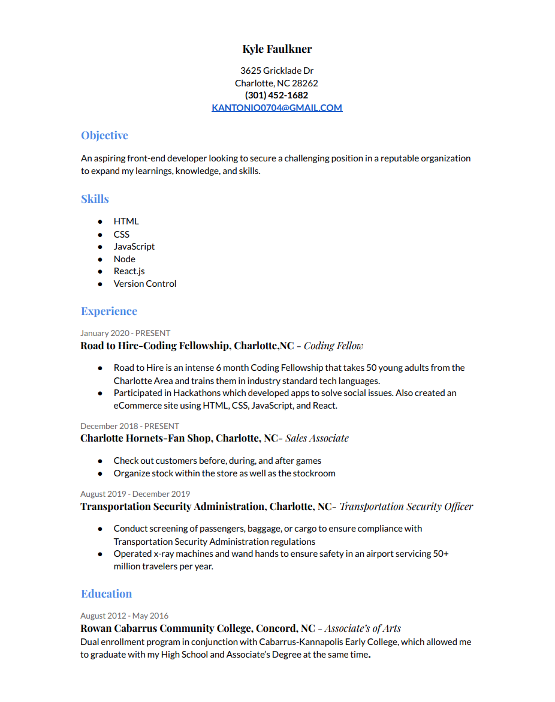

About Me
Orginally from P.G. County, Maryland. I have lived in Charlotte, NC for about 7 years. I love sneakers and designing new things! Before Road2Hire, I had never even thought about coding in my life. Now I am able to make cool websites like this very portfolio! I still consider myself new to coding; I cannot wait to continue to grow my technical skills and grow as a developer!
Resume

×
